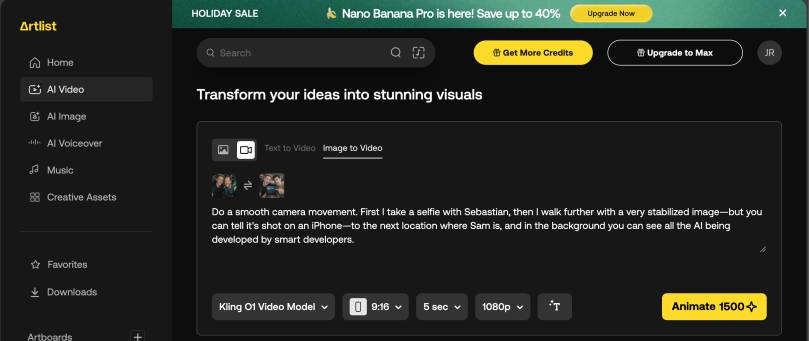
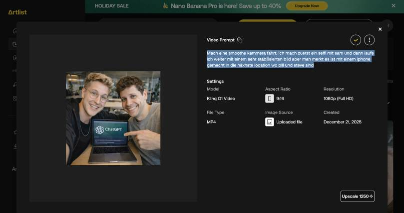
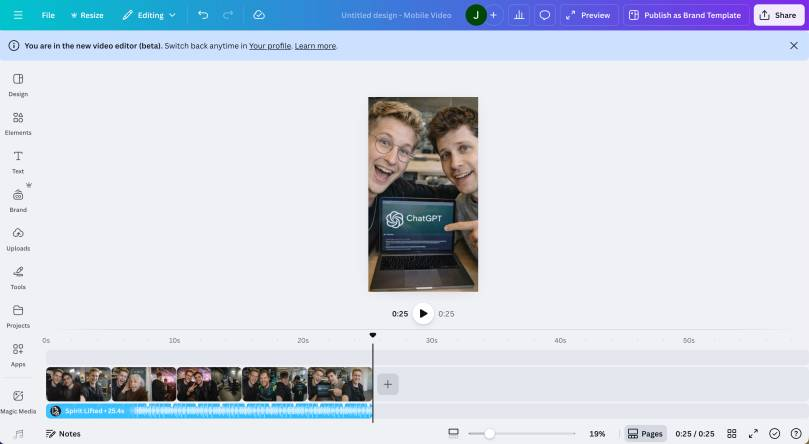

This post shows you How to Create an AI Selfie Tour Video with Tech Icons — using a stack of generative AI tools to produce a polished short video that animates well-known industry figures into a single tour. I cover the prompts, the model choices, and the editing pipeline behind this AI Selfie Tour Video featuring Tech Icons.
Let’s be honest: the AI video space has exploded. Every week there’s a new tool promising Hollywood-quality results. But what happens when you combine AI image generation with video transformation and some creative editing? You get something that looks surprisingly real – and it’s easier than you might think.
I recently created a video that looks like I’m walking around, taking selfies with some of the most recognizable faces in tech. Sam Altman, Bill Gates, Steve Jobs – the whole crew. And no, I didn’t actually meet them at a conference. Here’s exactly how I did it.
The Concept
The idea was simple: create a video that simulates a casual “selfie tour” – you know, the kind where you’re at an event, bumping into people, snapping quick photos.
That iPhone aesthetic is key. Perfect stabilization but with that subtle smartphone look makes it feel authentic rather than overly produced.
Step 1: Generate the Images with Nanobanana
First things first – I needed the base images. I used Nanobanana to generate five different images, each featuring me with different tech personalities.
Why Nanobanana? It handles portrait-style images really well and gives you control over the composition. For selfie-style shots, you want:
- Natural lighting that looks like indoor/outdoor event spaces
- Slightly off-center framing (like a real selfie)
- Casual expressions and poses
I generated five distinct scenes, each with a different star.
I found good prompts on this page: https://pixpretty.tenorshare.ai/de/ai-generator/selfie-mit-celebrity-ki-prompts.html
You can also use the new GPT Image 1.5 from OpenAI. If you want to better understand the concepts behind these kinds of AI assistants, this deep dive into co-pilots, architecture, and LLMs is a helpful companion read.
Step 2: Transform Images to Video with Artlist
Here’s where the magic happens. I used Artlist to create 5-second video transformations between each image. The key is the transition – going from Image A to Image B with smooth camera movement.
Each clip:
- Duration: 5 seconds
- Transition style: Smooth camera pan/walk movement
- Look: Stabilized but organic (that iPhone handheld quality)

The trick is making each transition feel like continuous movement. You’re not just fading between images – you’re creating the illusion of walking from one location to the next.
For this I use this prompt:
Do a smooth camera movement. First I take a selfie with Sebastian, then I walk further with a very stabilized image—but you can tell it's shot on an iPhone—to the next location where Sam is, and in the background you can see all the AI being developed by smart developers.

Step 3: Cut Everything Together in Canva
With all my clips ready, I moved to Canva for the final assembly. Say what you want about Canva – for quick video editing, it just works.
The editing process:
- Select Instagram Reel
- Import all 5-second clips
- Add background audio
- Add any finishing touches (slight color grading)
No need for Premiere Pro or DaVinci Resolve for this kind of project. Canva’s timeline editor handles the basics perfectly.

The Result
What you get is a video that looks remarkably like someone walking through an event, snapping selfies with different people. The AI-generated images provide the foundation, the video transformations create the motion, and the final edit ties everything together into a cohesive “story.”
Tools Used
| Step | Tool | Purpose |
|---|---|---|
| Image Generation | Nanobanana / Image 1.5 | Creating the base selfie images |
| Video Transformation | Artlist | 5-sec clips with smooth transitions |
| Final Edit | Canva | Cutting and sequencing |
Try It Yourself
The whole process took about an hour from concept to final video. The key learnings:
- Be specific with your image prompts – The more detail you give about lighting, angle, and composition, the better your base images
- Keep transitions short – 5 seconds per transition is the sweet spot. Longer feels draggy, shorter feels rushed
- Simple editing wins – You don’t need complex software for this workflow
Is this the future of content creation? Maybe. Is it a fun way to spend an afternoon experimenting with AI tools? Definitely. If you’re experimenting with realistic AI-generated media, you might also like this guide to Azure AI Content Safety.
What creative video ideas are you experimenting with? Let me know in the comments!
If you enjoyed this workflow breakdown, you might also like my overview of the 8 productivity tools I use daily for AI, coding, and planning.